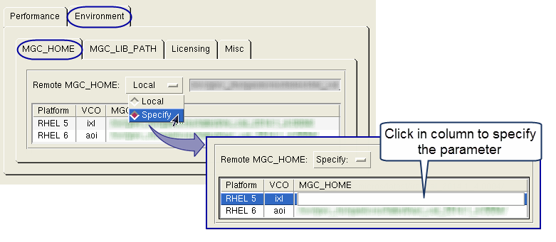

The selections
in the Environment tab in Calibre Interactive
allow you to set parameters such as executable paths and environment
variables that control remote host execution.
Calibre Interactive makes the
values of the remote user name, the MGC_HOME path, and the license
file available as parameters for all Calibre MTflex operations.
Prerequisites
Configure
your environment to allow rsh to execute your Calibre job remotely.
This may include creating and editing a .rhosts file in your home
directory.
Install
and configure Calibre to run on the remote computer.
Procedure
- Click Run Control on
the left panel of Calibre Interactive.
- Click the Environment tab.
- Click the MGC_HOME tab
to specify MGC_HOME for the remote host. Specify one of the following:
Local —
(Default) Use the same version of Calibre that is specified for
Calibre runs on the local host.
Specify —
Specify the path for MGC_HOME in the platform table. Click in the MGC_HOME
column for the platform you want and enter the new setting in the
text entry field, as shown in Figure 1.
Figure 1. Remote MGC_HOME Table
- Click the MGC_LIB_PATH tab
to specify MGC_LIB_PATH for the remote host. Specify one of the
following:
Current —
Use the current value.
Specify —
Specify the path for MGC_LIB_PATH in the platform table. Click in
the MGC_LIB_PATH column for the platform you want and enter the
new setting in the text entry field, as shown in Figure 1 for the MGC_HOME table.
- Click the Licensing tab.
If needed,
set “License File Name” and “License File Value” in the Remote Calibre section.
See the section “Mentor Standard Licensing (MSL)” in the Calibre Administrator’s
Guide for information on the license file.
See “Setting Licensing Options” for information on other licensing
options.
- Click the Misc tab.
Specify the remote shell and
remote user name, if needed. There are three options for the remote
shell:
- Default
Uses rsh, which may require a password or be otherwise restricted.
- Secure
Uses ssh, which uses host fingerprinting and key pairs. Creation
of an ssh private key is recommended. When using a machine without
rsh, ssh is automatically chosen.
Note: SSH_ASKPASS is used for ssh authentication. When using
ssh, make sure the openssh-askpass package is installed; it is included
with ssh. Without this package installed, host verification fails
when the host is not in the known_hosts file and there is no ssh
configuration file.
- Specify
Uses a user-defined shell. When selected, enter the path
to the shell.
Note: For Calibre
MTflex configurations with “Run Calibre on” specified as Local Host
or Remote Host, the remote shell used for communication with each
remote host is specified in the RSH column of the remote hosts table
on the Performance tab. If the RSH column
is not displayed, enable the “Details” checkbox to display all columns.
If there is no entry in the RSH column, the remote shell specified
on the Environment > Misc tab is used. See “Configuring for Distributed (MTflex) Execution”.